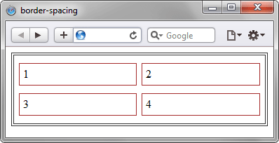

border-spacing
Задаёт расстояние между границами ячеек в таблице. border-spacing не работает в случае, когда для таблицы установлено свойство border-collapse со значением collapse.
Краткая информация
| Значение по умолчанию | 0 |
|---|---|
| Наследуется | Да |
| Применяется | К таблицам |
Синтаксис
border-spacing: <размер> [<размер>]Значения
Одно значение устанавливает одновременно расстояние по вертикали и горизонтали между границами ячеек. Если значений два, то первое определяет горизонтальное расстояние, а второе — вертикальное.
Пример
<!DOCTYPE html>
<html>
<head>
<meta charset="utf-8">
<title>border-spacing</title>
<style>
table {
border: 4px double #333; /* Рамка вокруг таблицы */
border-collapse: separate; /* Способ отображения границы */
width: 100%; /* Ширина таблицы */
border-spacing: 7px 11px; /* Расстояние между ячейками */
}
td {
padding: 5px; /* Поля вокруг текста */
border: 1px solid #a52a2a; /* Граница вокруг ячеек */
}
</style>
</head>
<body>
<table>
<tr>
<td>1</td><td>2</td>
</tr>
<tr>
<td>3</td><td>4</td>
</tr>
</table>
</body>
</html>Результат данного примера показан на рис. 1.

Рис. 1. Применение свойства border-spacing
Объектная модель
Объект.style.borderSpacing
Примечание
Если к элементу <table> добавлен атрибут cellspacing, то при использовании стилевого свойства border-spacing атрибут cellspacing не принимается во внимание и его значение игнорируется.
Спецификация
| Спецификация | Статус |
|---|---|
| CSS Level 2 (Revision 1) | Рекомендация |
Браузеры
| Internet Explorer | Chrome | Opera | Safari | Firefox |
| 8 | 1 | 4 | 1 | 1 |
| Android | Firefox Mobile | Opera Mobile | Safari Mobile |
| 1 | 1 | 6 | 1 |